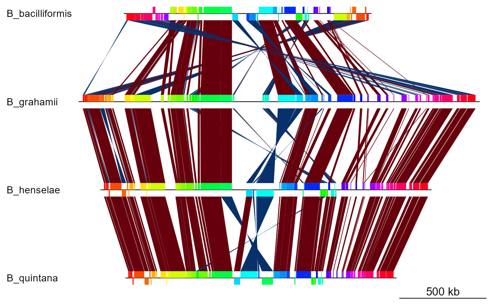

Mauve backbone of 4 Bartonella genomes
mauve_bbone.RdThe result of a multiple genome alignment of 4 Bartonella genomes with Mauve
Usage
data(mauve_bbone)Format
mauve_bbone, a list of two data frame lists, representing the
regions which are conserved in at least 2 genomes:
dna_segsA list of 4
dna_segobjects, containing the mauve blocks for each genome.comparisonA list of 3
comparisonobjects.
A bash script to obtain the same file as in the data is available in the
extdata folder of the package. Find its location by running
system.file('extdata/mauve.sh',package = 'genoPlotR').
The resulting backbone file can then be read with read_mauve_backbone.
Examples
data(mauve_bbone)
plot_gene_map(mauve_bbone$dna_segs, mauve_bbone$comparisons)
